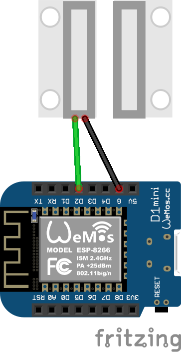
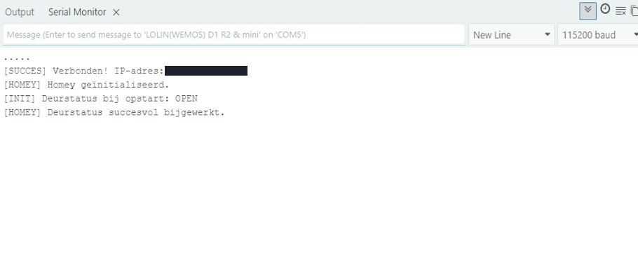

Soms zijn het juist de kleinste signalen die een smart home echt slim maken. Een deur die open gaat, een raam dat nog open staat of een kastdeur die wordt gebruikt: het lijken simpele gebeurtenissen, maar in Homey kun je er verrassend veel mee doen.
In dit project combineer je een bedrade MC-38 contactsensor met een Wemos D1 Mini en Homeyduino. Het resultaat is een betaalbare sensor die je direct kunt gebruiken voor meldingen, verlichting en eenvoudige beveiligingsflows. Dankzij de vernieuwde sketch voelt dit project bovendien niet meer als alleen een leuk experiment, maar als een nette basis die ook op langere termijn stabieler blijft werken.
Waarom deze sensor zo handig is
Een deur- of raamsensor is misschien niet het meest spectaculaire smart-home project, maar wel eentje waar je in de praktijk echt iets aan hebt. Je kunt Homey bijvoorbeeld laten melden dat een raam nog open staat, automatisch verlichting inschakelen zodra een deur opent of een alarmflow activeren wanneer er iemand binnenkomt terwijl je niet thuis bent.
Juist omdat het signaal zo eenvoudig is, is deze sensor breed inzetbaar. En dat maakt hem meteen een sterke basis voor verdere automatisering in huis. In deze versie komt daar nog iets belangrijks bij: de code is zo opgezet dat tijdelijke verbindingsproblemen minder snel leiden tot gemiste statussen of een sensor die stilletjes niets meer doorgeeft.
Zelfbouw of toch kant-en-klaar?
Uiteraard zijn er genoeg kant-en-klare deur- en raamsensoren te koop. Die zijn vaak draadloos en snel te plaatsen, wat vooral handig is op plekken waar je geen voeding in de buurt hebt.
Zelfbouw is vooral interessant wanneer je de kosten laag wilt houden, meer uit Homeyduino wilt halen of liever geen extra batterijsensoren toevoegt aan je woning. Voor vaste plekken, zoals een achterdeur, schuurdeur of raamkozijn, is een bedrade oplossing vaak juist verrassend praktisch. Zeker als je het leuk vindt om ook de achterliggende logica zelf te begrijpen en aan te passen.
Benodigdheden
- Wemos D1 Mini of vergelijkbaar ESP8266-board
- MC-38 deur- of raamcontact
- Micro USB-voeding of andere passende USB-voeding
- Breadboard of nette vaste bekabeling
- Homey met de Homeyduino app
- Computer of laptop voor de eerste configuratie
- Arduino IDE
Handige links bij dit project
Dit zijn producten die aansluiten op de benodigdheden in dit artikel.
Hoe deze sensor werkt
De kracht van dit project zit in de eenvoud. Het MC-38 contact geeft simpelweg door of het magneetcontact gesloten of onderbroken is. De Wemos D1 Mini leest die status uit op een digitale pin en stuurt die vervolgens als capability door naar Homey.
In deze vernieuwde versie gebeurt dat netter dan in een snelle basisopzet. De code werkt met debounce, controleert periodiek de wifi-verbinding, initialiseert Homey opnieuw als dat nodig is en bewaart de laatst bekende deurstatus lokaal zolang publiceren niet mogelijk is. Daarnaast wordt de actuele status ook periodiek opnieuw verstuurd via een heartbeat, zodat Homey niet alleen afhankelijk is van echte statuswisselingen.
Aansluitschema en hardware
De MC-38 wordt in deze opstelling aangesloten op D2 van de Wemos D1 Mini. Omdat de code gebruikmaakt van INPUT_PULLUP, heb je geen extra externe pull-up weerstand nodig. Dat houdt de bedrading lekker overzichtelijk.
- MC-38 sensor → D2
- Andere draad sensor → GND
- Board → Wemos D1 Mini
- Ingestelde modus → INPUT_PULLUP
Het maakt daarbij in de praktijk meestal niet uit welke van de twee sensoraders je op D2 of GND zet, zolang het contact maar correct wordt uitgelezen. In de sketch staat DOOR_OPEN_PIN_STATE op HIGH. Mocht jouw sensor in Homey precies omgekeerd reageren, dan is dat de instelling om als eerste te controleren.

Software voorbereiden
Voor dit project heb je Arduino IDE nodig, samen met de juiste ondersteuning voor ESP8266-boards en natuurlijk de Homeyduino-library. Controleer voor het uploaden altijd even of je het juiste board hebt geselecteerd in Arduino IDE.
Vul daarna in de code je eigen wifi-gegevens in en pas eventueel ook de apparaatnaam aan. In het voorbeeld staat die nu ingesteld op Keuken deursensor, maar je kunt daar natuurlijk iedere naam aan geven die voor jouw Homey-opstelling logisch is. Wil je tijdens het testen meer inzicht in wat er gebeurt, dan kun je DEBUG tijdelijk op 1 zetten. Dan zie je extra meldingen over ruwe pinstatussen en wifi-controles in de seriële monitor.
Code voor de deur- en raamsensor
Onderstaande sketch gebruikt debounce, bewaakt de wifi-verbinding, initialiseert Homey opnieuw na verbindingsproblemen en verstuurt periodiek een heartbeat. Daarnaast zit er een failsafe in die de ESP kan herstarten als de Homey-communicatie te lang stilvalt. Daardoor is deze versie beter voorbereid op dagelijks gebruik dan een heel eenvoudige basiscode.
#include <ESP8266WiFi.h>
#include <Homey.h>
// =========================
// Debug instellingen
// =========================
#define DEBUG 0 // 1 = debug aan, 0 = debug uit
#if DEBUG
#define DBG_PRINT(x) Serial.print(x)
#define DBG_PRINTLN(x) Serial.println(x)
#else
#define DBG_PRINT(x)
#define DBG_PRINTLN(x)
#endif
// =========================
// Configuratie
// =========================
namespace Config {
constexpr const char* WIFI_SSID = "<SSID>";
constexpr const char* WIFI_PASSWORD = "<PASSWORD>";
constexpr uint8_t DOOR_SENSOR_PIN = D2;
constexpr uint8_t DOOR_OPEN_PIN_STATE = HIGH;
constexpr unsigned long SENSOR_CHECK_INTERVAL_MS = 50;
constexpr unsigned long DOOR_DEBOUNCE_MS = 250;
constexpr unsigned long WIFI_CHECK_INTERVAL_MS = 15000;
constexpr unsigned long WIFI_CONNECT_TIMEOUT_MS = 30000;
constexpr unsigned long HOMEY_HEARTBEAT_INTERVAL_MS = 60000;
constexpr unsigned long HOMEY_REINIT_COOLDOWN_MS = 60000;
constexpr unsigned long HOMEY_STALE_TIMEOUT_MS = 300000;
constexpr unsigned long FAILSAFE_RESTART_COOLDOWN_MS = 900000;
constexpr const char* HOMEY_DEVICE_NAME = "Keuken deursensor";
constexpr const char* HOMEY_DEVICE_CLASS = "sensor";
constexpr const char* CAPABILITY_CONTACT = "alarm_contact";
}
// =========================
// State
// =========================
struct DoorState {
int stableDoorPinState = LOW;
int lastRawDoorPinState = LOW;
bool hasKnownDoorState = false;
bool currentDoorOpen = false;
bool lastPublishedDoorOpen = false;
bool hasPublishedDoorState = false;
bool dirty = false;
unsigned long lastSensorCheckAt = 0;
unsigned long lastDoorStateChangeAt = 0;
unsigned long lastPublishAt = 0;
};
struct WifiState {
unsigned long lastWifiCheckAt = 0;
bool wasConnected = false;
bool reconnectedEvent = false;
};
struct HomeyState {
bool initialized = false;
bool reinitRequested = false;
unsigned long lastActivityAt = 0;
unsigned long lastInitAt = 0;
unsigned long lastRestartAt = 0;
};
DoorState doorState;
WifiState wifiState;
HomeyState homeyState;
// =========================
// Functiedeclaraties
// =========================
void connectToWifiWithTimeout();
void maintainWifi(unsigned long currentMillis);
bool canPublishToHomey();
void initializeHomey(unsigned long currentMillis);
void requestHomeyReinitialize();
void maintainHomey(unsigned long currentMillis);
void markHomeyActivity(unsigned long currentMillis);
void runFailsafeRestartCheck(unsigned long currentMillis);
void processDoorSensor(unsigned long currentMillis);
void initializeDoorState(int currentRawPinState, unsigned long currentMillis);
void handleStableDoorStateChange(int newPinState, unsigned long currentMillis);
bool isDoorOpenFromPinState(int pinState);
void markDoorState(bool isOpen);
bool shouldPublishDoorState(unsigned long currentMillis);
void publishLatestDoorStateToHomey(unsigned long currentMillis);
void syncDoorStateIfDirty(unsigned long currentMillis);
// =========================
// Setup
// =========================
void setup() {
Serial.begin(115200);
Serial.println();
Serial.println(F("--- Deursensor Systeem Gestart ---"));
pinMode(Config::DOOR_SENSOR_PIN, INPUT_PULLUP);
WiFi.mode(WIFI_STA);
WiFi.setAutoReconnect(true);
WiFi.persistent(true);
connectToWifiWithTimeout();
initializeHomey(millis());
}
// =========================
// Main loop
// =========================
void loop() {
const unsigned long currentMillis = millis();
maintainWifi(currentMillis);
maintainHomey(currentMillis);
if (homeyState.initialized && WiFi.status() == WL_CONNECTED) {
Homey.loop();
}
yield();
if (wifiState.reconnectedEvent) {
wifiState.reconnectedEvent = false;
syncDoorStateIfDirty(currentMillis);
}
processDoorSensor(currentMillis);
runFailsafeRestartCheck(currentMillis);
}
// =========================
// WiFi
// =========================
void connectToWifiWithTimeout() {
WiFi.begin(Config::WIFI_SSID, Config::WIFI_PASSWORD);
Serial.print(F("Verbinden met WiFi..."));
const unsigned long startAttemptTime = millis();
while (WiFi.status() != WL_CONNECTED &&
millis() - startAttemptTime < Config::WIFI_CONNECT_TIMEOUT_MS) {
delay(500);
Serial.print(F("."));
}
Serial.println();
if (WiFi.status() == WL_CONNECTED) {
Serial.print(F("[SUCCES] Verbonden! IP-adres: "));
Serial.println(WiFi.localIP());
wifiState.wasConnected = true;
} else {
Serial.println(F("[WIFI] Timeout bereikt. Sensor start zonder wifi."));
wifiState.wasConnected = false;
}
}
void maintainWifi(unsigned long currentMillis) {
if (currentMillis - wifiState.lastWifiCheckAt < Config::WIFI_CHECK_INTERVAL_MS) {
return;
}
wifiState.lastWifiCheckAt = currentMillis;
wifiState.reconnectedEvent = false;
DBG_PRINT(F("[DEBUG] WiFi status: "));
DBG_PRINT(WiFi.status());
DBG_PRINT(F(" | IP: "));
DBG_PRINTLN(WiFi.localIP());
const wl_status_t status = WiFi.status();
if (status == WL_CONNECTED) {
if (!wifiState.wasConnected) {
Serial.print(F("[WIFI] Opnieuw verbonden! IP-adres: "));
Serial.println(WiFi.localIP());
wifiState.wasConnected = true;
wifiState.reconnectedEvent = true;
requestHomeyReinitialize();
}
return;
}
if (wifiState.wasConnected) {
Serial.println(F("[WIFI] Verbinding kwijt. Herstellen..."));
wifiState.wasConnected = false;
homeyState.initialized = false;
requestHomeyReinitialize();
} else {
Serial.println(F("[WIFI] Nog niet verbonden. Nieuwe poging..."));
}
WiFi.disconnect();
delay(100);
WiFi.begin(Config::WIFI_SSID, Config::WIFI_PASSWORD);
}
bool canPublishToHomey() {
return WiFi.status() == WL_CONNECTED && homeyState.initialized;
}
// =========================
// Homey
// =========================
void initializeHomey(unsigned long currentMillis) {
if (WiFi.status() != WL_CONNECTED) {
homeyState.initialized = false;
return;
}
Homey.begin(Config::HOMEY_DEVICE_NAME);
Homey.setClass(Config::HOMEY_DEVICE_CLASS);
Homey.addCapability(Config::CAPABILITY_CONTACT);
homeyState.initialized = true;
homeyState.reinitRequested = false;
homeyState.lastInitAt = currentMillis;
markHomeyActivity(currentMillis);
Serial.println(F("[HOMEY] Homey geïnitialiseerd."));
}
void requestHomeyReinitialize() {
homeyState.reinitRequested = true;
}
void maintainHomey(unsigned long currentMillis) {
if (WiFi.status() != WL_CONNECTED) {
homeyState.initialized = false;
return;
}
if (!homeyState.initialized) {
initializeHomey(currentMillis);
return;
}
if (!homeyState.reinitRequested) {
return;
}
if (currentMillis - homeyState.lastInitAt < Config::HOMEY_REINIT_COOLDOWN_MS) {
return;
}
initializeHomey(currentMillis);
}
void markHomeyActivity(unsigned long currentMillis) {
homeyState.lastActivityAt = currentMillis;
}
void runFailsafeRestartCheck(unsigned long currentMillis) {
if (WiFi.status() != WL_CONNECTED || !homeyState.initialized) {
return;
}
const bool homeyLooksStale =
(currentMillis - homeyState.lastActivityAt) >= Config::HOMEY_STALE_TIMEOUT_MS;
const bool restartCooldownPassed =
(currentMillis - homeyState.lastRestartAt) >= Config::FAILSAFE_RESTART_COOLDOWN_MS;
if (homeyLooksStale && restartCooldownPassed) {
Serial.println(F("[FAILSAFE] Te lang geen Homey-activiteit. Herstart ESP..."));
homeyState.lastRestartAt = currentMillis;
delay(250);
ESP.restart();
}
}
// =========================
// Deursensorlogica
// =========================
void processDoorSensor(unsigned long currentMillis) {
if (currentMillis - doorState.lastSensorCheckAt < Config::SENSOR_CHECK_INTERVAL_MS) {
return;
}
doorState.lastSensorCheckAt = currentMillis;
const int currentRawPinState = digitalRead(Config::DOOR_SENSOR_PIN);
if (currentRawPinState != doorState.lastRawDoorPinState) {
DBG_PRINT(F("[DEBUG] Raw pin state gewijzigd naar: "));
DBG_PRINTLN(currentRawPinState);
}
if (!doorState.hasKnownDoorState) {
initializeDoorState(currentRawPinState, currentMillis);
return;
}
if (currentRawPinState != doorState.lastRawDoorPinState) {
doorState.lastRawDoorPinState = currentRawPinState;
doorState.lastDoorStateChangeAt = currentMillis;
return;
}
const bool debouncePassed =
(currentMillis - doorState.lastDoorStateChangeAt) >= Config::DOOR_DEBOUNCE_MS;
if (!debouncePassed) {
return;
}
if (currentRawPinState != doorState.stableDoorPinState) {
handleStableDoorStateChange(currentRawPinState, currentMillis);
return;
}
if (shouldPublishDoorState(currentMillis)) {
publishLatestDoorStateToHomey(currentMillis);
}
}
void initializeDoorState(int currentRawPinState, unsigned long currentMillis) {
doorState.lastRawDoorPinState = currentRawPinState;
doorState.stableDoorPinState = currentRawPinState;
doorState.lastDoorStateChangeAt = currentMillis;
doorState.hasKnownDoorState = true;
const bool isOpen = isDoorOpenFromPinState(currentRawPinState);
Serial.print(F("[INIT] Deurstatus bij opstart: "));
Serial.println(isOpen ? F("OPEN") : F("DICHT"));
markDoorState(isOpen);
if (shouldPublishDoorState(currentMillis)) {
publishLatestDoorStateToHomey(currentMillis);
}
}
void handleStableDoorStateChange(int newPinState, unsigned long currentMillis) {
doorState.stableDoorPinState = newPinState;
const bool isOpen = isDoorOpenFromPinState(newPinState);
Serial.print(F("[EVENT] Deur is nu: "));
Serial.println(isOpen ? F("OPEN") : F("DICHT"));
markDoorState(isOpen);
if (shouldPublishDoorState(currentMillis)) {
publishLatestDoorStateToHomey(currentMillis);
}
}
bool isDoorOpenFromPinState(int pinState) {
return pinState == Config::DOOR_OPEN_PIN_STATE;
}
// =========================
// Publicatielogica
// =========================
void markDoorState(bool isOpen) {
doorState.currentDoorOpen = isOpen;
if (!doorState.hasPublishedDoorState) {
doorState.dirty = true;
return;
}
doorState.dirty = (doorState.currentDoorOpen != doorState.lastPublishedDoorOpen);
}
bool shouldPublishDoorState(unsigned long currentMillis) {
if (!doorState.hasKnownDoorState) {
return false;
}
if (!doorState.hasPublishedDoorState) {
return true;
}
const bool heartbeatReached =
(currentMillis - doorState.lastPublishAt) >= Config::HOMEY_HEARTBEAT_INTERVAL_MS;
return doorState.dirty || heartbeatReached;
}
void publishLatestDoorStateToHomey(unsigned long currentMillis) {
if (!doorState.hasKnownDoorState) {
return;
}
if (!canPublishToHomey()) {
doorState.dirty = true;
Serial.println(F("[WAARSCHUWING] Laatste deurstatus lokaal bewaard (Geen WiFi/Homey)."));
return;
}
Homey.setCapabilityValue(Config::CAPABILITY_CONTACT, doorState.currentDoorOpen);
doorState.lastPublishedDoorOpen = doorState.currentDoorOpen;
doorState.hasPublishedDoorState = true;
doorState.dirty = false;
doorState.lastPublishAt = currentMillis;
markHomeyActivity(currentMillis);
Serial.println(F("[HOMEY] Deurstatus succesvol bijgewerkt."));
}
void syncDoorStateIfDirty(unsigned long currentMillis) {
if (!doorState.hasKnownDoorState) {
return;
}
if (!doorState.dirty && doorState.hasPublishedDoorState) {
return;
}
Serial.println(F("[HOMEY] Laatste deurstatus synchroniseren..."));
publishLatestDoorStateToHomey(currentMillis);
}Testen via de seriële monitor
Na het uploaden open je de seriële monitor in Arduino IDE. Deze sketch gebruikt 115200 baud. Daar zie je direct wat de sensor doet bij het openen en sluiten van het contact.
Bij het opstarten meldt de code eerst welke deurstatus er is gedetecteerd en of de wifi-verbinding tot stand komt. Daarna verschijnt bij iedere stabiele wijziging een nieuwe statusregel. Bij verbindingsproblemen zie je bovendien of de laatste status lokaal wordt bewaard, of Homey opnieuw wordt geïnitialiseerd en of een heartbeat of synchronisatie opnieuw wordt uitgevoerd. Juist daardoor is deze versie ook prettiger te debuggen wanneer je hem langere tijd wilt laten draaien.

Slimme toepassingen
- Halverlichting inschakelen zodra een buitendeur open gaat.
- Een melding sturen wanneer een raam nog open staat terwijl het gaat regenen.
- Een alarmflow activeren als een deur opent terwijl je niet thuis bent.
- Verwarming of ventilatie aanpassen wanneer een raam langere tijd open blijft staan.
Koppelen aan Homey
Zodra de sensor correct uitleest, kun je hem koppelen aan Homey via Homeyduino. De status wordt daarbij gepubliceerd als alarm_contact, waardoor Homey precies weet of het contact open of dicht staat.
En daar zit meteen de echte meerwaarde van dit project. Op zichzelf is het slechts een eenvoudige contactsensor, maar in combinatie met Homey wordt het een slimme bouwsteen waarmee je allerlei handige flows kunt maken. Doordat deze sketch ook periodiek een heartbeat verstuurt en na wifi-herstel opnieuw kan synchroniseren, voelt de koppeling bovendien robuuster dan bij een heel minimale implementatie.
Praktisch gebruik en grenzen
Deze sensor is vooral interessant op vaste plekken waar voeding geen probleem is. Denk aan een achterdeur, schuurdeur, meterkast, kastdeur of raamkozijn. Juist op dat soort plekken is een eenvoudige bedrade sensor vaak stabiel, goedkoop en verrassend handig.
Wel blijft het zo dat je niet voor ieder raam in huis een apart board wilt ophangen. Zie dit project daarom vooral als een slimme en leerzame basis: een mooi instapprogramma in Homeyduino én een sensor waar je thuis direct iets aan hebt. Zoek je maximale eenvoud zonder bekabeling, dan is een kant-en-klare draadloze sensor logischer. Zoek je juist controle, lage kosten en inzicht in hoe alles werkt, dan is dit project erg leuk om te bouwen.
Conclusie
Van alle Homeyduino-projecten is dit misschien wel een van de toegankelijkste. Niet ingewikkeld, niet duur, maar wel direct bruikbaar. Met een MC-38 sensor, een Wemos D1 Mini en deze vernieuwde sketch bouw je een deur- of raamsensor die Homey kan gebruiken voor meldingen, verlichting en eenvoudige beveiliging.
De extra logica voor debounce, wifi-herstel, heartbeat en failsafe herstart maakt het verschil tussen een leuk proefproject en een sensor die ook in de praktijk net wat betrouwbaarder aanvoelt. En precies dat maakt dit zo’n leuk project: met beperkte middelen voeg je toch weer een praktisch stukje intelligentie toe aan je smart home.